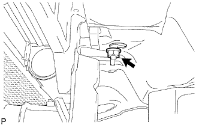
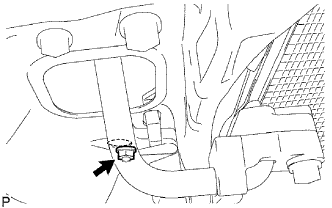

CẢM BIẾN TÚI KHÍ TRƯỚC > THÁO |
| 1. NGẮT CÁP ÂM RA KHỎI ẮC QUY |
| 2. THÁO LƯỚI CHE KÉT NƯỚC |
 |
Tháo 2 vít.
Dùng dụng cụ tháo kẹp, tháo kẹp ra.
Nhả khớp 5 vấu và tháo lưới che két nước.
| 3. THÁO ẮC QUY |
Tháo cáp ra khỏi cực dương (+) ắc quy.
Tháo 2 bulông và thanh giữ ắc quy.
Tháo ắc quy.
| 4. THÁO BỘ LỌC GIÓ |
| 5. THÁO CẢM BIẾN TÚI KHÍ TRƯỚC TRÁI |
|  |
Tháo đai ốc và cảm biến.
Tháo giắc nối của cảm biến.
| 6. THÁO CẢM BIẾN TÚI KHÍ TRƯỚC PHẢI |
|  |
Tháo đai ốc và cảm biến.
Tháo giắc nối của cảm biến.